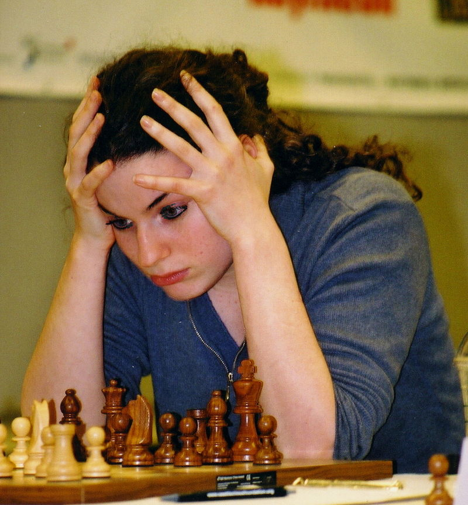

Сериал заслужил высокую оценку шахматной общественности за реалистичное изображение игры и игроков

В интервью Vanity Fair гроссмейстер среди женщин Дженнифер Шахаде сказала, что сериал «попал в самую точку». В статье о мини-сериале, опубликованной в The Times, чемпион Великобритании по шахматам Дэвид Хоуэлл подчеркнул, что шахматные сцены были «хорошо поставлены и реалистичны», в то время как чемпионка Великобритании по шахматам среди женщин Йованка Гуска отметила: «Я думаю, что это потрясающий сериал… Он очень хорошо передает эмоции шахмат». Международный мастер Дорса Дерахшани охарактеризовала сериал как «очень, очень точный» и заявила, что была удивлена «на самом деле сильными партиями». Юдит Полгар, первая женщина, сражавшаяся за титул чемпиона мира, сказала, что в сериале игроки-мужчины были «слишком милыми с Бет», в то время как канадская шахматистка и стример Андреа Ботез также почувствовала, что в шоу смягчена проблема сексизма в шахматном мире. Сара Лонгсон, экс-чемпионка Великобритании по шахматам среди женщин, сказала, что в реальности Бет должна была больше проигрыватьx. Действующий чемпион мира по шахматам Магнус Карлсен дал «Ходу королевы» 5 из 6 звезд, но нашёл «слишком нереальной» ту скорость, с которой Бет совершенствует своё мастерство. В финальном эпизоде сериала появляется реальная фигура шахматного мира, чемпионка мира среди женщин Нона Гаприндашвили, и утверждается, что она «никогда не играла против мужчин»; эта информация ложная: Гаприндашвили неоднократно играла с сильнейшими шахматистами мира, в том числе с гроссмейстерами Паулем Кересом, Светозаром Глигоричем и Михаилом Талем. Комментируя этот момент в сериале, Гаприндашвили указала, что «бесчестно распространять дезинформацию о чьих-либо достижениях» и заявила, что «ей, конечно, было обидно». Тем не менее она отметила, что сериал точно изображает давление в профессиональных шахматах, заявив: «Нужно быть психологически и физически сильным, и стремиться к совершенству»